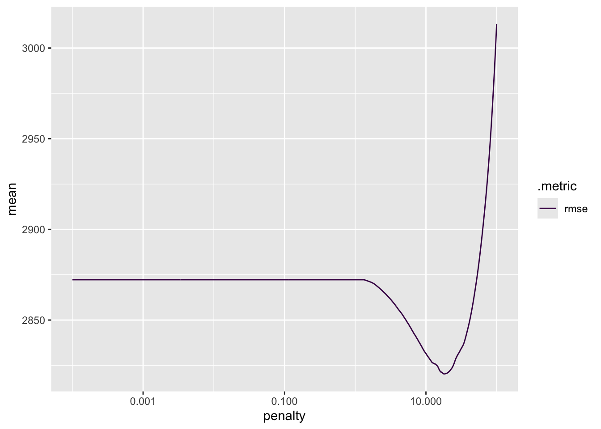

library(tidyverse)
library(shinymodels)
library(tidymodels)
library(janitor)
library(naniar)
library(skimr)
library(pastecs)
options(scipen = 999, digits = 2)
tidymodels_prefer()Modeling Practice
Load required packages
Read data
seoul_bike_data <- read_csv("https://www4.stat.ncsu.edu/~online/datasets/SeoulBikeData.csv",
locale = locale(encoding = "Latin1"))Check and manipulate the data
Check for any missing values.
vis_miss(seoul_bike_data)Explore columns names, column types, and values.
glimpse(seoul_bike_data)Rows: 8,760
Columns: 14
$ Date <chr> "01/12/2017", "01/12/2017", "01/12/2017", …
$ `Rented Bike Count` <dbl> 254, 204, 173, 107, 78, 100, 181, 460, 930…
$ Hour <dbl> 0, 1, 2, 3, 4, 5, 6, 7, 8, 9, 10, 11, 12, …
$ `Temperature(°C)` <dbl> -5.2, -5.5, -6.0, -6.2, -6.0, -6.4, -6.6, …
$ `Humidity(%)` <dbl> 37, 38, 39, 40, 36, 37, 35, 38, 37, 27, 24…
$ `Wind speed (m/s)` <dbl> 2.2, 0.8, 1.0, 0.9, 2.3, 1.5, 1.3, 0.9, 1.…
$ `Visibility (10m)` <dbl> 2000, 2000, 2000, 2000, 2000, 2000, 2000, …
$ `Dew point temperature(°C)` <dbl> -17.6, -17.6, -17.7, -17.6, -18.6, -18.7, …
$ `Solar Radiation (MJ/m2)` <dbl> 0.00, 0.00, 0.00, 0.00, 0.00, 0.00, 0.00, …
$ `Rainfall(mm)` <dbl> 0, 0, 0, 0, 0, 0, 0, 0, 0, 0, 0, 0, 0, 0, …
$ `Snowfall (cm)` <dbl> 0, 0, 0, 0, 0, 0, 0, 0, 0, 0, 0, 0, 0, 0, …
$ Seasons <chr> "Winter", "Winter", "Winter", "Winter", "W…
$ Holiday <chr> "No Holiday", "No Holiday", "No Holiday", …
$ `Functioning Day` <chr> "Yes", "Yes", "Yes", "Yes", "Yes", "Yes", …Generate basic summary statistics for numeric columns and check the unique values for the categorical variables.
skim(seoul_bike_data)| Name | seoul_bike_data |
| Number of rows | 8760 |
| Number of columns | 14 |
| _______________________ | |
| Column type frequency: | |
| character | 4 |
| numeric | 10 |
| ________________________ | |
| Group variables | None |
Variable type: character
| skim_variable | n_missing | complete_rate | min | max | empty | n_unique | whitespace |
|---|---|---|---|---|---|---|---|
| Date | 0 | 1 | 10 | 10 | 0 | 365 | 0 |
| Seasons | 0 | 1 | 6 | 6 | 0 | 4 | 0 |
| Holiday | 0 | 1 | 7 | 10 | 0 | 2 | 0 |
| Functioning Day | 0 | 1 | 2 | 3 | 0 | 2 | 0 |
Variable type: numeric
| skim_variable | n_missing | complete_rate | mean | sd | p0 | p25 | p50 | p75 | p100 | hist |
|---|---|---|---|---|---|---|---|---|---|---|
| Rented Bike Count | 0 | 1 | 704.60 | 645.00 | 0 | 191.0 | 504.50 | 1065.25 | 3556.0 | ▇▃▂▁▁ |
| Hour | 0 | 1 | 11.50 | 6.92 | 0 | 5.8 | 11.50 | 17.25 | 23.0 | ▇▇▆▇▇ |
| Temperature(°C) | 0 | 1 | 12.88 | 11.94 | -18 | 3.5 | 13.70 | 22.50 | 39.4 | ▂▆▆▇▂ |
| Humidity(%) | 0 | 1 | 58.23 | 20.36 | 0 | 42.0 | 57.00 | 74.00 | 98.0 | ▁▅▇▇▅ |
| Wind speed (m/s) | 0 | 1 | 1.72 | 1.04 | 0 | 0.9 | 1.50 | 2.30 | 7.4 | ▇▇▂▁▁ |
| Visibility (10m) | 0 | 1 | 1436.83 | 608.30 | 27 | 940.0 | 1698.00 | 2000.00 | 2000.0 | ▂▂▂▂▇ |
| Dew point temperature(°C) | 0 | 1 | 4.07 | 13.06 | -31 | -4.7 | 5.10 | 14.80 | 27.2 | ▂▃▇▇▆ |
| Solar Radiation (MJ/m2) | 0 | 1 | 0.57 | 0.87 | 0 | 0.0 | 0.01 | 0.93 | 3.5 | ▇▁▁▁▁ |
| Rainfall(mm) | 0 | 1 | 0.15 | 1.13 | 0 | 0.0 | 0.00 | 0.00 | 35.0 | ▇▁▁▁▁ |
| Snowfall (cm) | 0 | 1 | 0.08 | 0.44 | 0 | 0.0 | 0.00 | 0.00 | 8.8 | ▇▁▁▁▁ |
Simplify column names.
names(seoul_bike_data) <- str_remove(names(seoul_bike_data), "\\s*\\([^\\)]+\\)")Convert the Date column into an actual date. Turn the character variables (Seasons, Holiday, and Functioning Day) into factors. Rename the all variables to have easy to use names in snake case.
seoul_bike_data <-
seoul_bike_data |>
mutate(Date = dmy(Date)) |>
mutate(across(where(is.character), as.factor)) |>
clean_names()
seoul_bike_data# A tibble: 8,760 × 14
date rented_bike_count hour temperature humidity wind_speed visibility
<date> <dbl> <dbl> <dbl> <dbl> <dbl> <dbl>
1 2017-12-01 254 0 -5.2 37 2.2 2000
2 2017-12-01 204 1 -5.5 38 0.8 2000
3 2017-12-01 173 2 -6 39 1 2000
4 2017-12-01 107 3 -6.2 40 0.9 2000
5 2017-12-01 78 4 -6 36 2.3 2000
6 2017-12-01 100 5 -6.4 37 1.5 2000
7 2017-12-01 181 6 -6.6 35 1.3 2000
8 2017-12-01 460 7 -7.4 38 0.9 2000
9 2017-12-01 930 8 -7.6 37 1.1 2000
10 2017-12-01 490 9 -6.5 27 0.5 1928
# ℹ 8,750 more rows
# ℹ 7 more variables: dew_point_temperature <dbl>, solar_radiation <dbl>,
# rainfall <dbl>, snowfall <dbl>, seasons <fct>, holiday <fct>,
# functioning_day <fct>Exploratory data analysis
Generate summary statistics across variables.
summary(seoul_bike_data) date rented_bike_count hour temperature
Min. :2017-12-01 Min. : 0 Min. : 0.0 Min. :-18
1st Qu.:2018-03-02 1st Qu.: 191 1st Qu.: 5.8 1st Qu.: 4
Median :2018-06-01 Median : 504 Median :11.5 Median : 14
Mean :2018-06-01 Mean : 705 Mean :11.5 Mean : 13
3rd Qu.:2018-08-31 3rd Qu.:1065 3rd Qu.:17.2 3rd Qu.: 22
Max. :2018-11-30 Max. :3556 Max. :23.0 Max. : 39
humidity wind_speed visibility dew_point_temperature
Min. : 0 Min. :0.0 Min. : 27 Min. :-30.6
1st Qu.:42 1st Qu.:0.9 1st Qu.: 940 1st Qu.: -4.7
Median :57 Median :1.5 Median :1698 Median : 5.1
Mean :58 Mean :1.7 Mean :1437 Mean : 4.1
3rd Qu.:74 3rd Qu.:2.3 3rd Qu.:2000 3rd Qu.: 14.8
Max. :98 Max. :7.4 Max. :2000 Max. : 27.2
solar_radiation rainfall snowfall seasons holiday
Min. :0.0 Min. : 0 Min. :0.0 Autumn:2184 Holiday : 432
1st Qu.:0.0 1st Qu.: 0 1st Qu.:0.0 Spring:2208 No Holiday:8328
Median :0.0 Median : 0 Median :0.0 Summer:2208
Mean :0.6 Mean : 0 Mean :0.1 Winter:2160
3rd Qu.:0.9 3rd Qu.: 0 3rd Qu.:0.0
Max. :3.5 Max. :35 Max. :8.8
functioning_day
No : 295
Yes:8465
skim(seoul_bike_data)| Name | seoul_bike_data |
| Number of rows | 8760 |
| Number of columns | 14 |
| _______________________ | |
| Column type frequency: | |
| Date | 1 |
| factor | 3 |
| numeric | 10 |
| ________________________ | |
| Group variables | None |
Variable type: Date
| skim_variable | n_missing | complete_rate | min | max | median | n_unique |
|---|---|---|---|---|---|---|
| date | 0 | 1 | 2017-12-01 | 2018-11-30 | 2018-06-01 | 365 |
Variable type: factor
| skim_variable | n_missing | complete_rate | ordered | n_unique | top_counts |
|---|---|---|---|---|---|
| seasons | 0 | 1 | FALSE | 4 | Spr: 2208, Sum: 2208, Aut: 2184, Win: 2160 |
| holiday | 0 | 1 | FALSE | 2 | No : 8328, Hol: 432 |
| functioning_day | 0 | 1 | FALSE | 2 | Yes: 8465, No: 295 |
Variable type: numeric
| skim_variable | n_missing | complete_rate | mean | sd | p0 | p25 | p50 | p75 | p100 | hist |
|---|---|---|---|---|---|---|---|---|---|---|
| rented_bike_count | 0 | 1 | 704.60 | 645.00 | 0 | 191.0 | 504.50 | 1065.25 | 3556.0 | ▇▃▂▁▁ |
| hour | 0 | 1 | 11.50 | 6.92 | 0 | 5.8 | 11.50 | 17.25 | 23.0 | ▇▇▆▇▇ |
| temperature | 0 | 1 | 12.88 | 11.94 | -18 | 3.5 | 13.70 | 22.50 | 39.4 | ▂▆▆▇▂ |
| humidity | 0 | 1 | 58.23 | 20.36 | 0 | 42.0 | 57.00 | 74.00 | 98.0 | ▁▅▇▇▅ |
| wind_speed | 0 | 1 | 1.72 | 1.04 | 0 | 0.9 | 1.50 | 2.30 | 7.4 | ▇▇▂▁▁ |
| visibility | 0 | 1 | 1436.83 | 608.30 | 27 | 940.0 | 1698.00 | 2000.00 | 2000.0 | ▂▂▂▂▇ |
| dew_point_temperature | 0 | 1 | 4.07 | 13.06 | -31 | -4.7 | 5.10 | 14.80 | 27.2 | ▂▃▇▇▆ |
| solar_radiation | 0 | 1 | 0.57 | 0.87 | 0 | 0.0 | 0.01 | 0.93 | 3.5 | ▇▁▁▁▁ |
| rainfall | 0 | 1 | 0.15 | 1.13 | 0 | 0.0 | 0.00 | 0.00 | 35.0 | ▇▁▁▁▁ |
| snowfall | 0 | 1 | 0.08 | 0.44 | 0 | 0.0 | 0.00 | 0.00 | 8.8 | ▇▁▁▁▁ |
Explore rented_bike_count by the functioning_day variable.
seoul_bike_data |>
group_by(functioning_day) |>
select(rented_bike_count) |>
skim()| Name | select(group_by(seoul_bik… |
| Number of rows | 8760 |
| Number of columns | 2 |
| _______________________ | |
| Column type frequency: | |
| numeric | 1 |
| ________________________ | |
| Group variables | functioning_day |
Variable type: numeric
| skim_variable | functioning_day | n_missing | complete_rate | mean | sd | p0 | p25 | p50 | p75 | p100 | hist |
|---|---|---|---|---|---|---|---|---|---|---|---|
| rented_bike_count | No | 0 | 1 | 0 | 0 | 0 | 0 | 0 | 0 | 0 | ▁▁▇▁▁ |
| rented_bike_count | Yes | 0 | 1 | 729 | 642 | 2 | 214 | 542 | 1084 | 3556 | ▇▃▂▁▁ |
There appear to be no bike rentals on non-functioning days. This implies the business is closed on these days and should be removed from the final data used for analysis.
Create an object that captures all the weather variables.
weather_vars <- names(seoul_bike_data[4:9])
weather_vars[1] "temperature" "humidity" "wind_speed"
[4] "visibility" "dew_point_temperature" "solar_radiation" To simplify analysis, summarize across the hours so that each day has one observation associated with it:
group_by()thedate,seasons, andholidayvariables- find the
sumof therented_bike_count,rainfall, andsnowfallvariables - find the
meanof all the weather related variables
new_seoul_bike_data <-
seoul_bike_data |>
filter(functioning_day == "Yes") |>
group_by(date, seasons, holiday) |>
summarise(across(c(rented_bike_count, rainfall, snowfall), sum),
across(all_of(weather_vars), mean))
new_seoul_bike_data# A tibble: 353 × 12
# Groups: date, seasons [353]
date seasons holiday rented_bike_count rainfall snowfall temperature
<date> <fct> <fct> <dbl> <dbl> <dbl> <dbl>
1 2017-12-01 Winter No Holiday 9539 0 0 -2.45
2 2017-12-02 Winter No Holiday 8523 0 0 1.33
3 2017-12-03 Winter No Holiday 7222 4 0 4.88
4 2017-12-04 Winter No Holiday 8729 0.1 0 -0.304
5 2017-12-05 Winter No Holiday 8307 0 0 -4.46
6 2017-12-06 Winter No Holiday 6669 1.3 8.6 0.0458
7 2017-12-07 Winter No Holiday 8549 0 10.4 1.09
8 2017-12-08 Winter No Holiday 8032 0 0 -3.82
9 2017-12-09 Winter No Holiday 7233 0 0 -0.846
10 2017-12-10 Winter No Holiday 3453 4.1 32.5 1.19
# ℹ 343 more rows
# ℹ 5 more variables: humidity <dbl>, wind_speed <dbl>, visibility <dbl>,
# dew_point_temperature <dbl>, solar_radiation <dbl>Recreate basic summary statistics.
summary(new_seoul_bike_data) date seasons holiday rented_bike_count
Min. :2017-12-01 Autumn:81 Holiday : 17 Min. : 977
1st Qu.:2018-02-27 Spring:90 No Holiday:336 1st Qu.: 6967
Median :2018-05-28 Summer:92 Median :18563
Mean :2018-05-28 Winter:90 Mean :17485
3rd Qu.:2018-08-24 3rd Qu.:26285
Max. :2018-11-30 Max. :36149
rainfall snowfall temperature humidity wind_speed
Min. : 0 Min. : 0 Min. :-15 Min. :22 Min. :0.7
1st Qu.: 0 1st Qu.: 0 1st Qu.: 3 1st Qu.:48 1st Qu.:1.3
Median : 0 Median : 0 Median : 14 Median :57 Median :1.7
Mean : 4 Mean : 2 Mean : 13 Mean :58 Mean :1.7
3rd Qu.: 0 3rd Qu.: 0 3rd Qu.: 23 3rd Qu.:68 3rd Qu.:2.0
Max. :96 Max. :79 Max. : 34 Max. :96 Max. :4.0
visibility dew_point_temperature solar_radiation
Min. : 214 Min. :-27.8 Min. :0.03
1st Qu.:1087 1st Qu.: -5.2 1st Qu.:0.28
Median :1558 Median : 4.6 Median :0.56
Mean :1434 Mean : 4.0 Mean :0.57
3rd Qu.:1874 3rd Qu.: 14.9 3rd Qu.:0.82
Max. :2000 Max. : 25.0 Max. :1.22 stat.desc(new_seoul_bike_data[,4:ncol(new_seoul_bike_data)], basic = F) rented_bike_count rainfall snowfall temperature humidity
median 18563.00 0.00 0.00 13.74 57.17
mean 17485.31 3.58 1.86 12.78 58.17
SE.mean 528.90 0.63 0.47 0.62 0.79
CI.mean.0.95 1040.21 1.23 0.92 1.23 1.56
var 98747243.62 139.00 77.52 137.32 220.98
std.dev 9937.16 11.79 8.80 11.72 14.87
coef.var 0.57 3.30 4.73 0.92 0.26
wind_speed visibility dew_point_temperature solar_radiation
median 1.658 1557.75 4.61 0.565
mean 1.726 1434.01 3.95 0.568
SE.mean 0.032 26.14 0.69 0.017
CI.mean.0.95 0.063 51.41 1.36 0.033
var 0.357 241234.27 168.82 0.100
std.dev 0.597 491.16 12.99 0.316
coef.var 0.346 0.34 3.29 0.557Report correlation between numeric variables.
cor(new_seoul_bike_data[,4:ncol(new_seoul_bike_data)]) rented_bike_count rainfall snowfall temperature humidity
rented_bike_count 1.000 -0.239 -0.265 0.7531 0.036
rainfall -0.239 1.000 -0.023 0.1445 0.529
snowfall -0.265 -0.023 1.000 -0.2670 0.065
temperature 0.753 0.145 -0.267 1.0000 0.404
humidity 0.036 0.529 0.065 0.4042 1.000
wind_speed -0.193 -0.102 0.021 -0.2607 -0.234
visibility 0.166 -0.222 -0.102 0.0023 -0.559
dew_point_temperature 0.650 0.265 -0.210 0.9628 0.632
solar_radiation 0.736 -0.323 -0.233 0.5503 -0.274
wind_speed visibility dew_point_temperature
rented_bike_count -0.193 0.1660 0.65
rainfall -0.102 -0.2220 0.26
snowfall 0.021 -0.1019 -0.21
temperature -0.261 0.0023 0.96
humidity -0.234 -0.5592 0.63
wind_speed 1.000 0.2060 -0.29
visibility 0.206 1.0000 -0.15
dew_point_temperature -0.288 -0.1536 1.00
solar_radiation 0.096 0.2714 0.38
solar_radiation
rented_bike_count 0.736
rainfall -0.323
snowfall -0.233
temperature 0.550
humidity -0.274
wind_speed 0.096
visibility 0.271
dew_point_temperature 0.383
solar_radiation 1.000Create some plots to explore relationships.
new_seoul_bike_data |>
ggplot(aes(x = temperature, y = rented_bike_count)) +
geom_point(aes(color = holiday)) +
facet_wrap(~ seasons) +
ggtitle("Relationship Between Rented Bike Count and Solar Radiation",
subtitle = "Considering Effects of Season and Holiday") +
xlab("Temperature") +
ylab("Rented Bike Count")new_seoul_bike_data |>
ggplot(aes(x = wind_speed, y = rented_bike_count)) +
geom_point() +
facet_wrap(~ seasons) +
ggtitle("Relationship Between Rented Bike Count and Wind Speed",
subtitle = "Considering Effects of Season") +
xlab("Wind Speed") +
ylab("Rented Bike Count")new_seoul_bike_data |>
ggplot(aes(x = solar_radiation, y = rented_bike_count)) +
geom_point() +
facet_wrap(~ seasons) +
ggtitle("Relationship Between Rented Bike Count and Solar Radiation",
subtitle = "Considering Effects of Season") +
xlab("Solar Radiation") +
ylab("Rented Bike Count")new_seoul_bike_data |>
mutate(snowfall = factor(if_else(snowfall == 0, "No Snow", "Snow"))) |>
ggplot(aes(x = snowfall, y = rented_bike_count)) +
geom_boxplot() +
ggtitle("Distribution of Rented Bike Count for Snowy Versus Non-Snowy Days") +
xlab("Snowfall") +
ylab("Rented Bike Count")
new_seoul_bike_data |>
mutate(rainfall = factor(if_else(rainfall == 0, "No Rain", "Rain"))) |>
ggplot(aes(x = rainfall, y = rented_bike_count)) +
geom_boxplot() +
ggtitle("Distribution of Rented Bike Count for Rainy Versus Non-Rainy Days") +
xlab("Rainfall") +
ylab("Rented Bike Count")new_seoul_bike_data |>
mutate(weekpart = factor(if_else(wday(date, label = T) %in% c("Sun", "Sat"), "Weekend", "Weekday"))) |>
ggplot(aes(x = weekpart, y = rented_bike_count)) +
geom_boxplot() +
ggtitle("Distribution of Rented Bike Count for Weekdays Versus Weekends") +
xlab("Part of Week") +
ylab("Rented Bike Count")new_seoul_bike_data |>
ggplot(aes(x = holiday, y = rented_bike_count)) +
geom_boxplot() +
ggtitle("Distribution of Rented Bike Count for Holidays Versus Non-Holidays") +
xlab("Holiday") +
ylab("Rented Bike Count")Split the data
Split the data into a training and test set (75/25 split). Use the strata argument to stratify the split on the seasons variable.
set.seed(1017)
bike_split <- initial_split(new_seoul_bike_data, prop = 0.75, strata = "seasons")
bike_train <- training(bike_split)
bike_test <- testing(bike_split)On the training set, create a 10 fold CV split.
bike_10_fold <- vfold_cv(bike_train, 10)Create recipes
For the 1st recipe:
- ignore the date variable for modeling, but use it to create a weekday/weekend (factor) variable called
weekpart - standardize the numeric variables
- create dummy variables for the
seasons,holiday, and newweekpartvariable
bike_rec_1 <-
recipe(rented_bike_count ~ ., data = bike_train) |>
step_date(date, features = "dow") |>
step_mutate(weekpart = factor(if_else(date_dow %in% c("Sun", "Sat"), "Weekend", "Weekday"))) |>
step_rm(date, date_dow) |>
step_normalize(all_numeric(), -all_outcomes()) |>
step_dummy(seasons, holiday, weekpart)bike_rec_1 |>
prep(training = bike_train) |>
bake(bike_train)# A tibble: 263 × 14
rainfall snowfall temperature humidity wind_speed visibility
<dbl> <dbl> <dbl> <dbl> <dbl> <dbl>
1 -0.312 -0.196 1.08 0.204 -0.903 0.835
2 -0.312 -0.196 1.04 -0.239 -0.401 1.15
3 2.39 -0.196 0.925 1.60 -1.15 0.154
4 -0.312 -0.196 0.945 0.243 1.30 1.07
5 -0.312 -0.196 0.980 0.841 0.264 0.420
6 -0.195 -0.196 0.802 -0.0842 1.25 0.855
7 -0.312 -0.196 0.762 -0.630 -0.125 1.13
8 -0.312 -0.196 0.785 -0.577 -0.860 1.16
9 -0.312 -0.196 0.751 -0.677 -0.450 1.16
10 -0.312 -0.196 0.911 0.276 -0.874 1.13
# ℹ 253 more rows
# ℹ 8 more variables: dew_point_temperature <dbl>, solar_radiation <dbl>,
# rented_bike_count <dbl>, seasons_Spring <dbl>, seasons_Summer <dbl>,
# seasons_Winter <dbl>, holiday_No.Holiday <dbl>, weekpart_Weekend <dbl>For the 2nd recipe:
- do the same steps as above
- add in interactions between
seasonsandholiday,seasonsandtemperature, andtemperatureandrainfall
bike_rec_2 <-
bike_rec_1 |>
step_interact(~ starts_with("holiday"):starts_with("seasons") +
temperature:starts_with("seasons") +
temperature:rainfall)bike_rec_2 |>
prep(training = bike_train) |>
bake(bike_train)# A tibble: 263 × 21
rainfall snowfall temperature humidity wind_speed visibility
<dbl> <dbl> <dbl> <dbl> <dbl> <dbl>
1 -0.312 -0.196 1.08 0.204 -0.903 0.835
2 -0.312 -0.196 1.04 -0.239 -0.401 1.15
3 2.39 -0.196 0.925 1.60 -1.15 0.154
4 -0.312 -0.196 0.945 0.243 1.30 1.07
5 -0.312 -0.196 0.980 0.841 0.264 0.420
6 -0.195 -0.196 0.802 -0.0842 1.25 0.855
7 -0.312 -0.196 0.762 -0.630 -0.125 1.13
8 -0.312 -0.196 0.785 -0.577 -0.860 1.16
9 -0.312 -0.196 0.751 -0.677 -0.450 1.16
10 -0.312 -0.196 0.911 0.276 -0.874 1.13
# ℹ 253 more rows
# ℹ 15 more variables: dew_point_temperature <dbl>, solar_radiation <dbl>,
# rented_bike_count <dbl>, seasons_Spring <dbl>, seasons_Summer <dbl>,
# seasons_Winter <dbl>, holiday_No.Holiday <dbl>, weekpart_Weekend <dbl>,
# holiday_No.Holiday_x_seasons_Spring <dbl>,
# holiday_No.Holiday_x_seasons_Summer <dbl>,
# holiday_No.Holiday_x_seasons_Winter <dbl>, …For the 3rd recipe:
- do the same as the 2nd recipe
- add in quadratic terms for each numeric predictor
bike_rec_3 <-
recipe(rented_bike_count ~ ., data = bike_train) |>
step_date(date, features = "dow") |>
step_mutate(weekpart = factor(if_else(date_dow %in% c("Sun", "Sat"), "Weekend", "Weekday"))) |>
step_rm(date, date_dow) |>
step_normalize(all_numeric(), -all_outcomes()) |>
step_poly(all_numeric(), -all_outcomes(), degree = 2, keep_original_cols = T) |>
step_rm(ends_with("poly_1")) |>
step_dummy(seasons, holiday, weekpart) |>
step_interact(~ starts_with("holiday"):starts_with("seasons") +
temperature:starts_with("seasons") +
temperature:rainfall)bike_rec_3 |>
prep(training = bike_train) |>
bake(bike_train)# A tibble: 263 × 29
rainfall snowfall temperature humidity wind_speed visibility
<dbl> <dbl> <dbl> <dbl> <dbl> <dbl>
1 -0.312 -0.196 1.08 0.204 -0.903 0.835
2 -0.312 -0.196 1.04 -0.239 -0.401 1.15
3 2.39 -0.196 0.925 1.60 -1.15 0.154
4 -0.312 -0.196 0.945 0.243 1.30 1.07
5 -0.312 -0.196 0.980 0.841 0.264 0.420
6 -0.195 -0.196 0.802 -0.0842 1.25 0.855
7 -0.312 -0.196 0.762 -0.630 -0.125 1.13
8 -0.312 -0.196 0.785 -0.577 -0.860 1.16
9 -0.312 -0.196 0.751 -0.677 -0.450 1.16
10 -0.312 -0.196 0.911 0.276 -0.874 1.13
# ℹ 253 more rows
# ℹ 23 more variables: dew_point_temperature <dbl>, solar_radiation <dbl>,
# rented_bike_count <dbl>, rainfall_poly_2 <dbl>, snowfall_poly_2 <dbl>,
# temperature_poly_2 <dbl>, humidity_poly_2 <dbl>, wind_speed_poly_2 <dbl>,
# visibility_poly_2 <dbl>, dew_point_temperature_poly_2 <dbl>,
# solar_radiation_poly_2 <dbl>, seasons_Spring <dbl>, seasons_Summer <dbl>,
# seasons_Winter <dbl>, holiday_No.Holiday <dbl>, weekpart_Weekend <dbl>, …Fit MLR Models
Set up linear model fit to use the “lm” engine.
lm_mod <-
linear_reg() |>
set_engine("lm")Fit models for recipe 1 using 10 fold CV via fit_resamples() and consider the training set CV error.
bike_wfl_1 <-
workflow() |>
add_recipe(bike_rec_1) |>
add_model(lm_mod)bike_cv_fits_1 <-
bike_wfl_1 |>
fit_resamples(bike_10_fold)bike_cv_1_metrics <-
bike_cv_fits_1 |>
collect_metrics()Repeat process for recipe 2.
bike_wfl_2 <-
workflow() |>
add_recipe(bike_rec_2) |>
add_model(lm_mod)bike_cv_fits_2 <-
bike_wfl_2 |>
fit_resamples(bike_10_fold)bike_cv_2_metrics <-
bike_cv_fits_2 |>
collect_metrics()Repeat process for recipe 3.
bike_wfl_3 <-
workflow() |>
add_recipe(bike_rec_3) |>
add_model(lm_mod)bike_cv_fits_3 <-
bike_wfl_3 |>
fit_resamples(bike_10_fold)bike_cv_3_metrics <-
bike_cv_fits_3 |>
collect_metrics()Consider the training set CV error across recipes to choose a best model.
rbind(bike_cv_1_metrics, bike_cv_2_metrics, bike_cv_3_metrics) |>
filter(.metric == "rmse") |>
mutate(model = c("Recipe 1", "Recipe 2", "Recipe 3")) |>
select(model, "mean rmse" = mean, n, std_err)# A tibble: 3 × 4
model `mean rmse` n std_err
<chr> <dbl> <int> <dbl>
1 Recipe 1 3987. 10 171.
2 Recipe 2 2980. 10 276.
3 Recipe 3 2898. 10 250.bike_best_fit <-
bike_wfl_3 |>
fit(bike_train)bike_best_fit |>
tidy()# A tibble: 29 × 5
term estimate std.error statistic p.value
<chr> <dbl> <dbl> <dbl> <dbl>
1 (Intercept) 16061. 1620. 9.92 1.41e-19
2 rainfall -1538. 429. -3.59 4.05e- 4
3 snowfall -238. 194. -1.23 2.22e- 1
4 temperature -1177. 4252. -0.277 7.82e- 1
5 humidity -2556. 1476. -1.73 8.48e- 2
6 wind_speed -476. 209. -2.28 2.37e- 2
7 visibility -118. 274. -0.432 6.66e- 1
8 dew_point_temperature 8358. 4922. 1.70 9.08e- 2
9 solar_radiation 3473. 378. 9.19 2.25e-17
10 rainfall_poly_2 10396. 3505. 2.97 3.33e- 3
# ℹ 19 more rowsUsing the best model, fit the model to the entire training data set using the last_fit() function. Compute the RMSE metric on the test set.
bike_wfl_3 |>
last_fit(split = bike_split) |>
collect_metrics()# A tibble: 2 × 4
.metric .estimator .estimate .config
<chr> <chr> <dbl> <chr>
1 rmse standard 3145. Preprocessor1_Model1
2 rsq standard 0.895 Preprocessor1_Model1Obtain the final model (fit on the entire training set) coefficient table using extract_fit_parsnip() and tidy().
extract_fit_parsnip(
bike_wfl_3 |>
last_fit(split = bike_split)
) |>
tidy() |>
print(n=Inf)# A tibble: 29 × 5
term estimate std.error statistic p.value
<chr> <dbl> <dbl> <dbl> <dbl>
1 (Intercept) 16061. 1620. 9.92 1.41e-19
2 rainfall -1538. 429. -3.59 4.05e- 4
3 snowfall -238. 194. -1.23 2.22e- 1
4 temperature -1177. 4252. -0.277 7.82e- 1
5 humidity -2556. 1476. -1.73 8.48e- 2
6 wind_speed -476. 209. -2.28 2.37e- 2
7 visibility -118. 274. -0.432 6.66e- 1
8 dew_point_temperature 8358. 4922. 1.70 9.08e- 2
9 solar_radiation 3473. 378. 9.19 2.25e-17
10 rainfall_poly_2 10396. 3505. 2.97 3.33e- 3
11 snowfall_poly_2 -1330. 3018. -0.441 6.60e- 1
12 temperature_poly_2 -13043. 17391. -0.750 4.54e- 1
13 humidity_poly_2 -6400. 6020. -1.06 2.89e- 1
14 wind_speed_poly_2 -805. 3133. -0.257 7.97e- 1
15 visibility_poly_2 -2688. 3107. -0.865 3.88e- 1
16 dew_point_temperature_poly_2 -12076. 12346. -0.978 3.29e- 1
17 solar_radiation_poly_2 -6827. 3753. -1.82 7.02e- 2
18 seasons_Spring -5283. 2649. -1.99 4.73e- 2
19 seasons_Summer 15176. 3659. 4.15 4.71e- 5
20 seasons_Winter -8051. 2707. -2.97 3.24e- 3
21 holiday_No.Holiday 5577. 1474. 3.78 1.96e- 4
22 weekpart_Weekend -2422. 381. -6.35 1.08e- 9
23 holiday_No.Holiday_x_seasons_Spring 227. 2681. 0.0847 9.33e- 1
24 holiday_No.Holiday_x_seasons_Summer -1817. 3218. -0.565 5.73e- 1
25 holiday_No.Holiday_x_seasons_Winter -4175. 1916. -2.18 3.04e- 2
26 seasons_Spring_x_temperature 3662. 1087. 3.37 8.83e- 4
27 seasons_Summer_x_temperature -14596. 2238. -6.52 4.26e-10
28 seasons_Winter_x_temperature -6544. 2786. -2.35 1.96e- 2
29 temperature_x_rainfall -1198. 504. -2.38 1.82e- 2Fit LASSO Model
bike_lasso_rec <-
recipe(rented_bike_count ~ ., data = bike_train) |>
step_date(date, features = "dow") |>
step_mutate(weekpart = factor(if_else(date_dow %in% c("Sun", "Sat"), "Weekend", "Weekday"))) |>
step_rm(date, date_dow) |>
step_normalize(all_numeric(), -all_outcomes()) |>
step_poly(all_numeric(), -all_outcomes(), degree = 2, keep_original_cols = T) |>
step_rm(ends_with("poly_1")) |>
step_dummy(seasons, holiday, weekpart) |>
step_interact(~ starts_with("holiday"):starts_with("seasons") +
temperature:starts_with("seasons") +
temperature:rainfall)lasso_spec <-
linear_reg(penalty = tune(), mixture = 1) |>
set_engine("glmnet")bike_lasso_wfl <-
workflow() |>
add_recipe(bike_lasso_rec) |>
add_model(lasso_spec)bike_lasso_grid <-
bike_lasso_wfl |>
tune_grid(resamples = bike_10_fold,
grid = grid_regular(penalty(range = c(-4, 2)), levels = 500)) bike_lasso_grid |>
collect_metrics() |>
filter(.metric == "rmse") |>
arrange(mean)# A tibble: 500 × 7
penalty .metric .estimator mean n std_err .config
<dbl> <chr> <chr> <dbl> <int> <dbl> <chr>
1 18.0 rmse standard 2820. 10 243. Preprocessor1_Model438
2 18.5 rmse standard 2820. 10 242. Preprocessor1_Model439
3 19.0 rmse standard 2820. 10 242. Preprocessor1_Model440
4 17.5 rmse standard 2821. 10 243. Preprocessor1_Model437
5 19.5 rmse standard 2821. 10 242. Preprocessor1_Model441
6 20.1 rmse standard 2821. 10 242. Preprocessor1_Model442
7 17.0 rmse standard 2821. 10 243. Preprocessor1_Model436
8 20.6 rmse standard 2821. 10 241. Preprocessor1_Model443
9 16.5 rmse standard 2821. 10 243. Preprocessor1_Model435
10 16.1 rmse standard 2821. 10 243. Preprocessor1_Model434
# ℹ 490 more rowsbike_lasso_grid |>
collect_metrics() |>
filter(.metric == "rmse") |>
ggplot(aes(penalty, mean, color = .metric)) +
geom_line() +
scale_x_log10()
lowest_rmse <-
bike_lasso_grid |>
select_best(metric = "rmse")
lowest_rmse# A tibble: 1 × 2
penalty .config
<dbl> <chr>
1 18.0 Preprocessor1_Model438bike_lasso_final <-
bike_lasso_wfl |>
finalize_workflow(lowest_rmse) |>
fit(bike_train)
tidy(bike_lasso_final)# A tibble: 29 × 3
term estimate penalty
<chr> <dbl> <dbl>
1 (Intercept) 17470. 18.0
2 rainfall -1554. 18.0
3 snowfall -296. 18.0
4 temperature 4432. 18.0
5 humidity -26.6 18.0
6 wind_speed -504. 18.0
7 visibility 79.7 18.0
8 dew_point_temperature 150. 18.0
9 solar_radiation 3526. 18.0
10 rainfall_poly_2 9884. 18.0
# ℹ 19 more rowsbike_lasso_wfl |>
finalize_workflow(lowest_rmse) |>
last_fit(split = bike_split) |>
collect_metrics()# A tibble: 2 × 4
.metric .estimator .estimate .config
<chr> <chr> <dbl> <chr>
1 rmse standard 3043. Preprocessor1_Model1
2 rsq standard 0.903 Preprocessor1_Model1bike_lasso_wfl |>
finalize_workflow(lowest_rmse) |>
fit(bike_train) |>
predict(bike_test) |>
pull() |>
rmse_vec(truth = bike_test$rented_bike_count)[1] 3043